なぜ、手に入れたはずの人生に「感動」がないのか。
その答えは、
すでに決まっている。
もう、自分を変えなくていい。
なぜ、手に入れたはずの人生に「感動」がないのか。
もう、自分を変えなくていい。
下記に当てはまるなら
今が「その時」です。
以前のように頑張れない。気力が続かない。健康診断が近づくたびに憂鬱になる
限界まで考え抜いて選択してきた。それでも「この人生は正しかった」とは、まだ言い切れない
人生とは結局何だったのか。これから何のために生きるのか。その問いの答えが、まだ見つかっていない
周囲からは順調に見える。しかし──内側では「生きていけるが、面白くはない」が続いている
自己啓発、能力開発、古今東西の哲学、認知科学、瞑想、コーチング、心理療法──すべて一巡した。どれも最終回答にはならなかった
もし一つでも当てはまるなら──
今こそ、あなたが天命を悟るタイミングです。
Uniqueness
あなたの人生には、初期条件がある。
言語、文化、価値観、記憶、身体──
これら五つの構造が、あなたの人生をたった一つの方向へ、最初から導いていた。
その収束点を、「天命」と呼ぶ。
| 既存のアプローチ | 天命の言語化セッション™ | |
|---|---|---|
| 前提 | 自由意志がある | 自由意志はない |
| 方向 | 自分を変える | 自分を知る |
| 対象 | 行動・思考・感情 | 人生の必然性そのもの |
| 結果 | 一時的な改善 | 二度と戻らない認識の転換 |
自分を変えるのではなく、すでにある構造を読み解く。
それが「天命の言語化」です。
A Question for You
答えられなくても構いません。
その問いが浮かんだこと自体が、あなたの構造が動き始めた証拠です。
Case I
50代男性 ── 福祉施設勤務
「"優しさ"の正体が
恐怖だったと知った。
母への恩も、妻への愛も、
天命の先にあった」
Before
周囲からは「優しい人」と
言われ続けてきた。
だが夜、布団に入ると、
別の自分が顔を出す。
利用者を思い出すたび、
使命感ではなく苛立ちが込み上げる。
「なぜ自分がここまで
しなければならないのか」
その怒りを飲み込むために、
翌日はもっと献身的に振る舞った。
母にはずっと支えてもらっていた。
経済的にも、精神的にも。
「口先ばかり」と言われるたびに、
胸の奥が焼けた。
反論できなかった。
事実だったから。
いつか安心させたい。
「あなたの息子は大丈夫だよ」と、
胸を張って言える自分になりたい。
──その「いつか」が、
何年経っても来なかった。
前の結婚は壊れた。
離婚して、もう一度やり直した。
今の妻は、
そんな自分を選んでくれた人だ。
だからこそ、
この人だけは
幸せにしなければならない。
でも、家では目も合わせられない。
笑顔を作る体力すら残っていない。
職場では
「この人に任せれば大丈夫」
という評価を守り続ける。
誰にも言えない本音がある。
「もう全部やめたい」
母を安心させたいのに、できない。
妻を幸せにしたいのに、できない。
自分が何を感じているのかすら、
もうわからなくなっていた。
▼
After
セッションで掘り起こされたのは、
幼少期に刻まれた
「自分には価値がない」
という原初の傷だった。
「人のために尽くさなければ、
存在を許されない」──
そのルールが、
福祉の仕事を選ばせ、
母への罪悪感を膨らませ、
妻の前で「いい男」を
演じさせ続けていた。
「分からないから探し続ける」
──その構文自体が、
変わらなくていい理由として
機能していたことに気づいた。
天命が言語化された瞬間、
献身の動機が
根底から書き換わった。
母を安心させるために
頑張るのではない。
妻を幸せにするために
無理をするのでもない。
天命を生きている自分が、
結果として
母を安心させ、
妻を笑顔にする。
順番が、逆だった。
セッションから半年後──
妻と目を合わせて話せるようになった。
母には「もう大丈夫だよ」と、初めて言えた。
Case II
60代男性 ── 大学教授
「60年間、凡人だと信じてきた。
でもそれは、あの子が
生き延びるために作った嘘だった」
Before
教育一筋で生きてきた。
何十年も教壇に立ち、
教え子は各地にいる。
周囲からは「立派な先生」と
言われてきた。
──だがそれは全部、
兄の影で生きてきた人間の、
必死の演技だった。
子どもの頃から、兄と比べられた。
兄はいつ勉強しているか
わからないのに成績は常にトップ。
自分は夜中の2時まで机に向かっても、
100番以内にすら入れなかった。
父から言われた言葉が、
今も耳にこびりついている。
「お前はダメだ」
「人の何倍も努力しなければ無理だ」
いつしか、こう信じるようになった。
「自分は凡人だ」──と。
高校時代、万引きが
やめられなくなった。
スリルではなく、
満たされない何かを
埋めるためだった。
成績は学年最下位。
下宿までさせてもらいながらの
体たらく。
罪悪感に耐えきれず、
劇薬を飲んだ。
一週間、意識が戻らなかった。
──あの日から40年以上経った今も、
自分を「凡人」だと
思い続けている。
定年退職した。
心から会いたいと思える友人は、
一人もいない。
深く親しくなることを、
ずっと避けてきたからだ。
転校を繰り返した少年時代、
仲良くなれば別れが来ると学んだ。
だったら最初から、
誰とも深く関わらなければいい。
妻にさえ、本当の気持ちを
打ち明けたことがない。
▼
After
60年越しの構造が可視化されたのは、
「凡人でいること」が幼少期に作った
生存装置だったという事実だった。
目立たないために。
傷つかないために。
期待されないために──
幼い自分が生き延びるために
必要だったルールが、
60年以上、作動し続けていた。
「甘えたかった。
でも甘えさせてもらえなかった」
その一言が出た瞬間、
すべてが繋がった。
天命が言語化された瞬間、
「凡人」という鎧が静かに外れた。
60年間、自分の感情を殺して
生きてきた男が、初めて泣いた。
セッション後──
妻に、60年間言えなかった言葉を伝えた。
「ずっと、甘えたかった」と。
Case III
50代男性 ── 経営者
「金で買えないものの一覧が、
自分の人生に全部揃っていた」
Before
ビジネスでは成功した。
金は十分にある。
タワーマンションの高層階に
住んでいる。
だが、2回離婚した。
1回目は「仕事が忙しかった」で
片づけた。
2回目は、妻から
「あなたには心がない」と
言われて終わった。
親とは絶縁している。
きっかけはもう覚えていない。
ただ、戻る気もなかった。
夜景が綺麗な部屋に、一人でいる。
ウイスキーのグラスは、
気づけば3杯目になっている。
ある時期は、
それだけでは足りなくなりかけた。
危ない薬にも手が伸びかけた。
友人はいる。
SNSには「いいね」がつく。
だが、本音を言える相手は
一人もいない。
「何のために稼いだのか」
「何のためにこの部屋にいるのか」
「何のために生きているのか」
その問いが毎晩、
天井を見つめるたびに降りてくる。
誰にも言えなかった。
「成功者」が
「生きる意味がわからない」とは、
口が裂けても言えなかった。
▼
After
セッションで暴かれたのは、
「成功」が逃走の結果だった
という事実だった。
父の事業は失敗し、
家庭は崩壊した。
その姿を見て、
「自分は絶対に成功する」と誓った。
だがその誓いは、
天命ではなく恐怖から
生まれたものだった。
金を稼げば稼ぐほど、
人が離れた。
離婚を2回繰り返し、
親とも絶縁した。
成功の代償が、すべてだった。
天命が言語化された瞬間、
走り続ける理由が消え、
初めて立ち止まることができた。
恐怖で走る人生から、
使命で歩む人生へ──
景色がまるで違って見えた。
セッションから数ヶ月後──
絶縁していた親に、電話をかけた。
何を話したかは覚えていない。ただ、泣いた。
Case IV
50代女性 ── セラピスト
「人を癒してきた。
でも本当に癒したかったのは、
あの日の自分だった」
Before
人の心を聴く仕事をしている。
相手の痛みに寄り添い、
光を見つける手伝いをしてきた。
──だが、自分自身の痛みには
触れられなかった。
4歳の記憶がある。
兄が病気だった。
そのことで両親が毎日のように
言い争っていた。
母が言った。
「兄が助かるなら、
あんたが代わればいい」
母は手を上げる人だった。
父はガラスの灰皿を振りかざし、
寸止めした。
あの時の目が、今も消えない。
仲良くしてほしくて声を上げたら、
兄に言われた。
「黙れ。何も言うな」
三方向から、
存在を否定された。
あの日から決めた。
抗わない。感情を出さない。
ノーと言わない。
自分が犠牲になる。
それが、生き延びるための
唯一のルールだった。
大人になった。
学びを重ねた。
資格も取った。
メソッドもたくさん試した。
頭では全部わかっている。
なのに、変わりきれない。
ある夜、ふと思った。
「この状態で、
このまま死んでいくの？」
一番辛いのは、
人には「大丈夫」と言えるのに、
自分には言えないこと。
▼
After
あの日の構造が初めて言葉になったのは、
あの4歳の日に刻まれた
「お前は要らない」
という原初のルールだった。
「抗わない。感情を出さない。
自分が犠牲になる」──
その生存装置が、
何十年も起動し続けていた。
人を支える仕事を選んだのも、
自己犠牲でしか
存在を許されなかったから。
「その認識を作っているのは私だ」
──その一言が降りた瞬間、
過去が現在を動かす権利を失った。
天命が言語化されたとき、
「助ける人」が
「自然体で在る人」に変わった。
自己犠牲ではなく、対等。
支援の動機が、
義務から天命へ──
すべてが、書き換わった。
セッション後──
初めて、クライアントの前で涙を見せた。
「助ける人」ではなく「共にいる人」として。
Facilitator

実存科学研究所 代表
「天命の言語化セッション™︎」
開発者/ファシリテーター
「Metaがある限り、自由意志は存在しない」
この一行に、すべてが集約されている。
1989年、福島県生まれ。大学在学中からコーチとして活動を始め、卒業後は不登校支援のカウンセラーとして全国トップの業績を記録。しかし売上優先の組織体質に違和感を覚え、自らの道を選ぶ。
「Nimbus Creation」を創業し、約10年にわたりインターネットカウンセラー養成講座を運営。1300人以上に心理学とビジネスの技術を届けた。しかし本当の探究はそこから始まった。神経科学、分析哲学、仏教、密教、ヴェーダーンタ──あらゆる領域を横断しながら瞑想を深める中で、精神の根底が一度、完全に崩れ落ちた経験を持つ。
家族と友人に支えられ、そこから立ち上がったとき、手の中に残っていたのはたった一つの認識＜Meta＞だった。その認識が「天命の言語化セッション™」の原点となり、現在は実存科学研究所を主宰。
天命を悟り、日々全うする人が増えること。
天命を語り合える「心友」が社会に満ちること。
──それが、次の文明の夜明けとなる。
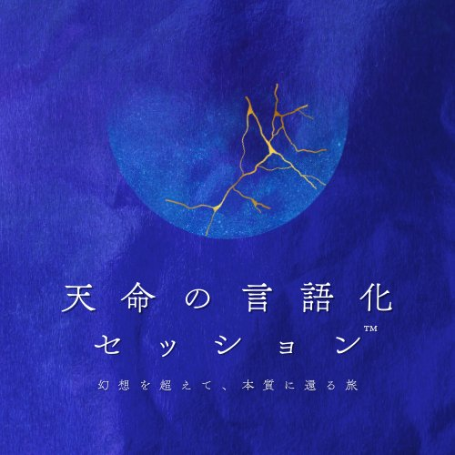
10,000時間+
対話・臨床経験
9冊 + 8本
著書・論文
2,000名+
受講実績
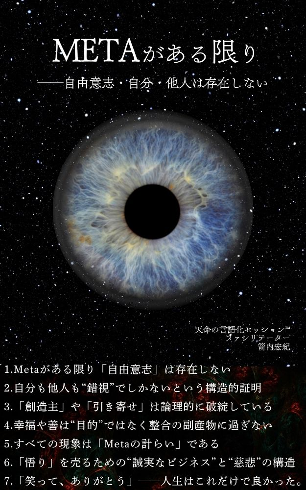
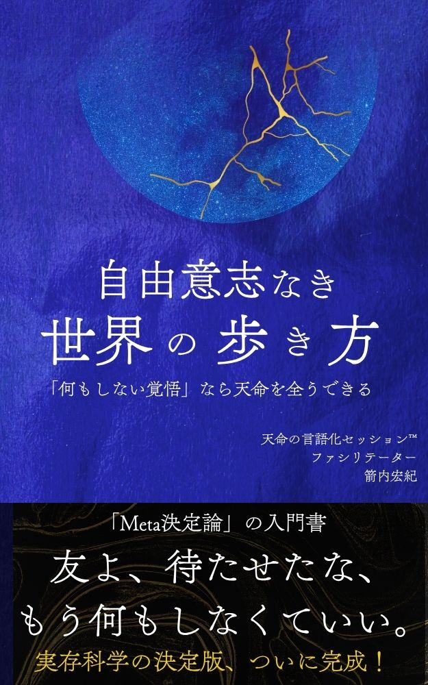
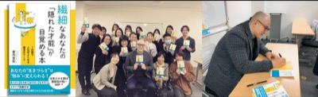
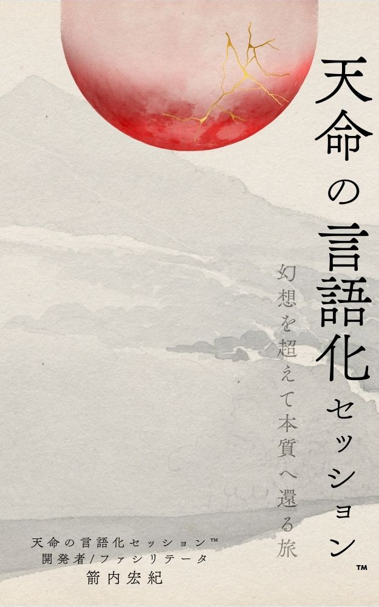
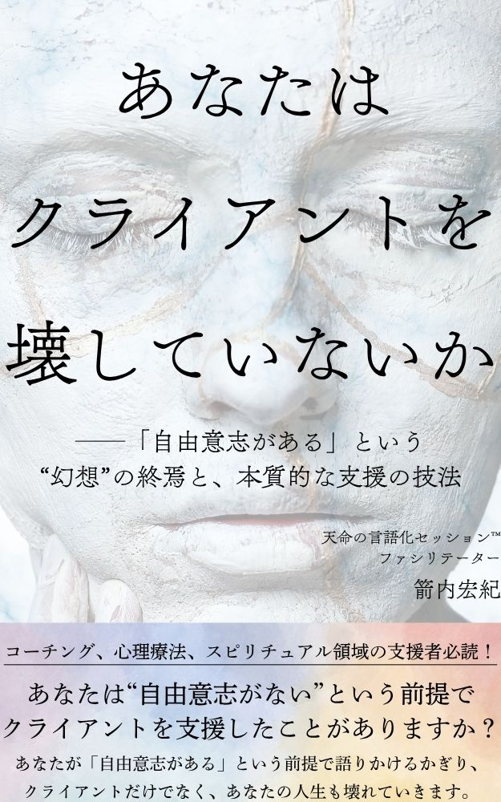
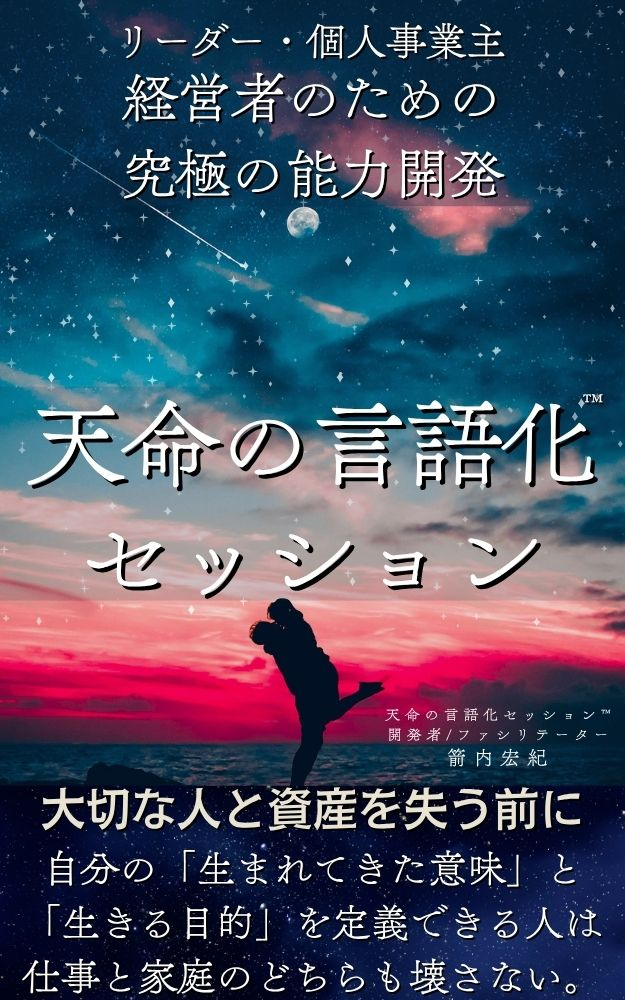
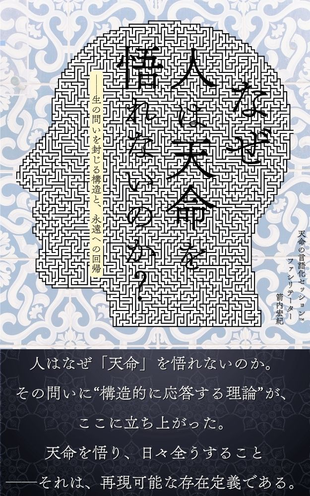
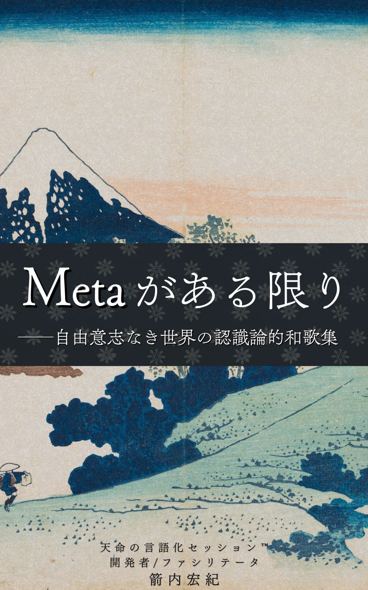
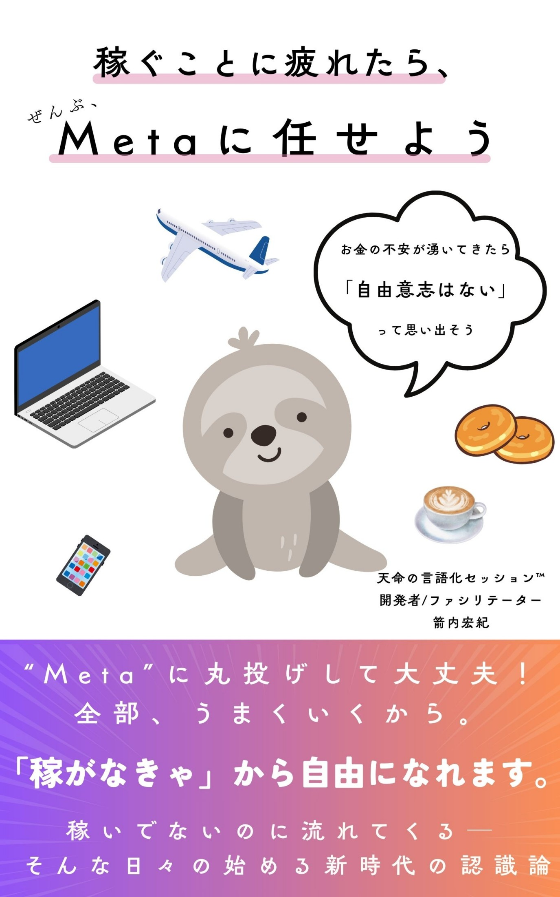
Twelve Dialogues
 Meta
Meta
 自我
自我
 宿命
宿命
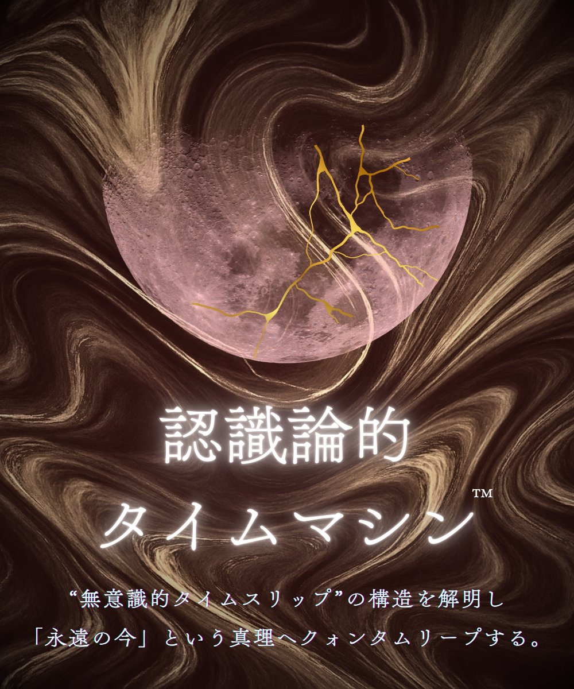
時間 家族
家族
 愛
愛
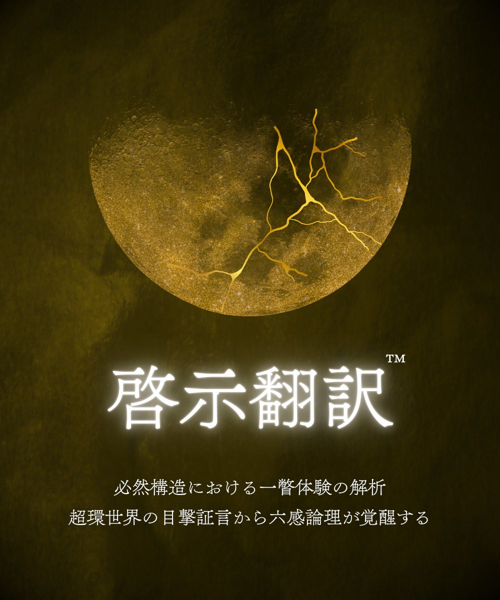
啓示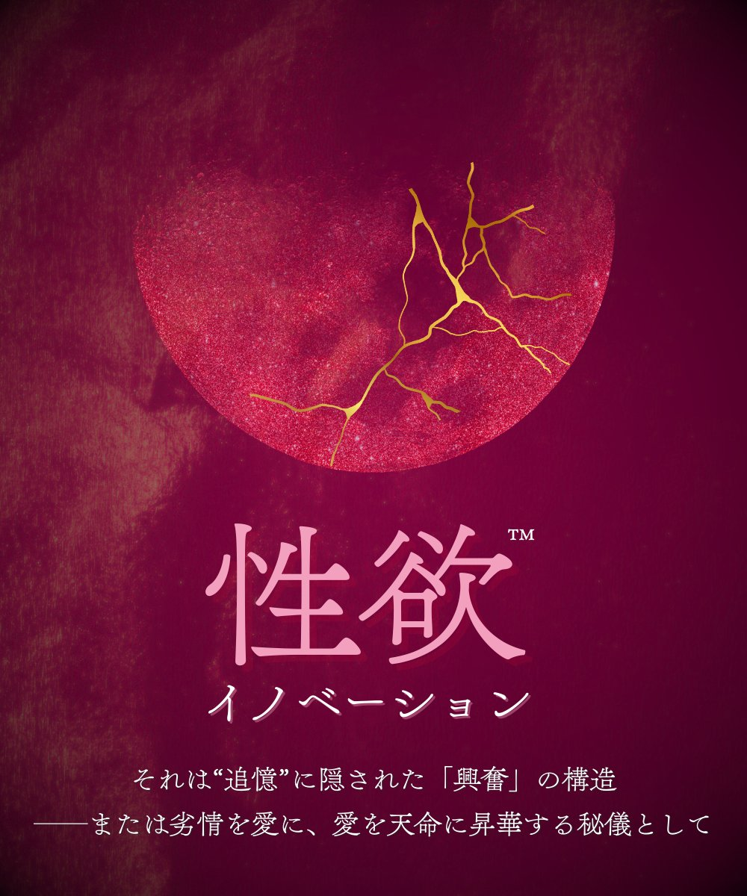
性欲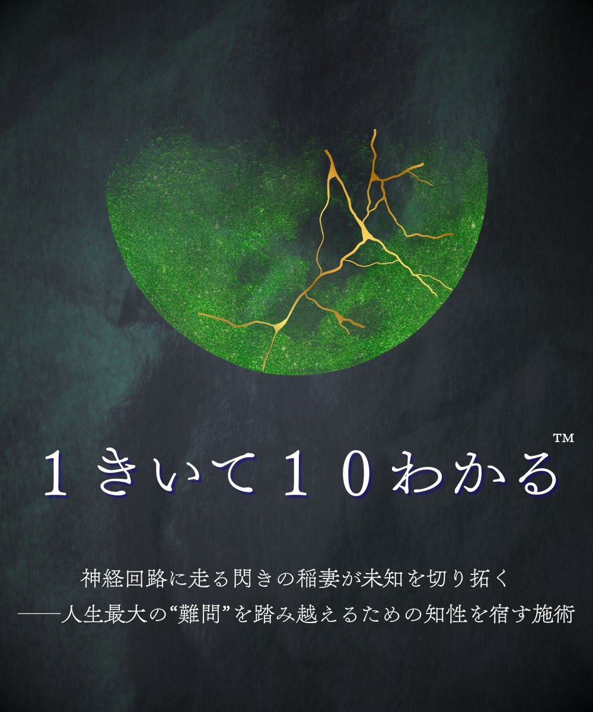
直観 恐怖
恐怖
 遺作
遺作
FAQ
Q1
自己啓発やコーチングと何が違うのですか？
自己啓発やコーチングは「自分を変える」ことを前提としています。天命の言語化セッション™は「自分を知る」ことが前提です。自由意志を仮定せず、あなたの初期条件（Meta）が必然的に向かう収束点を読み解きます。変化ではなく、発見です。
Q2
診断結果だけで何かが変わるのですか？
診断は「現在地の可視化」です。変わるかどうかは、可視化された構造にどう向き合うかで決まります。ただし、多くの方が診断結果を読んだだけで「何が引っかかっていたのか」に気づき始めます。認識が動けば、構造は動きます。
Q3
セッションを受けなくても意味がありますか？
はい。診断だけでも自己理解は深まります。ただし、天命の言語化は対話の中でしか完了しません。診断は構造を「見る」段階、セッションは天命を「言葉にする」段階です。
Q4
本当に無料ですか？
ダークサイド診断は完全無料です。登録も不要です。診断後、天命の言語化ワークシートと問いを受け取りたい方のみ、メールアドレスの入力をお願いしています。
延べ2,000名以上の対話から生まれた構造診断
15の問いに答えるだけで、あなたのMeta構造が見える。
登録不要。完全無料。営業・勧誘は一切ありません。
※ 15問 / 約3分 / 完全無料 / 登録不要